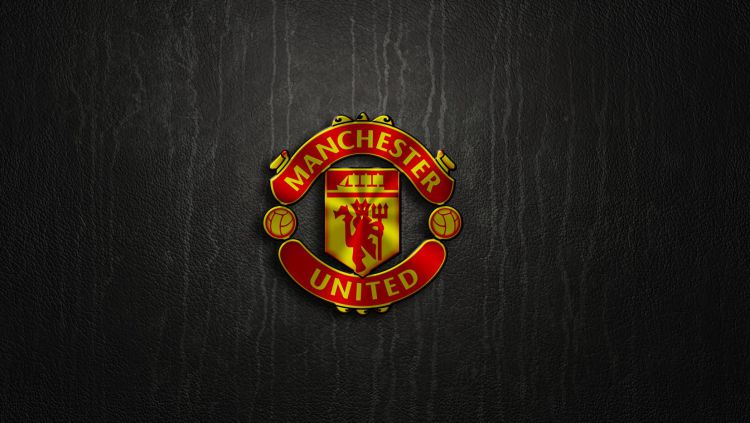
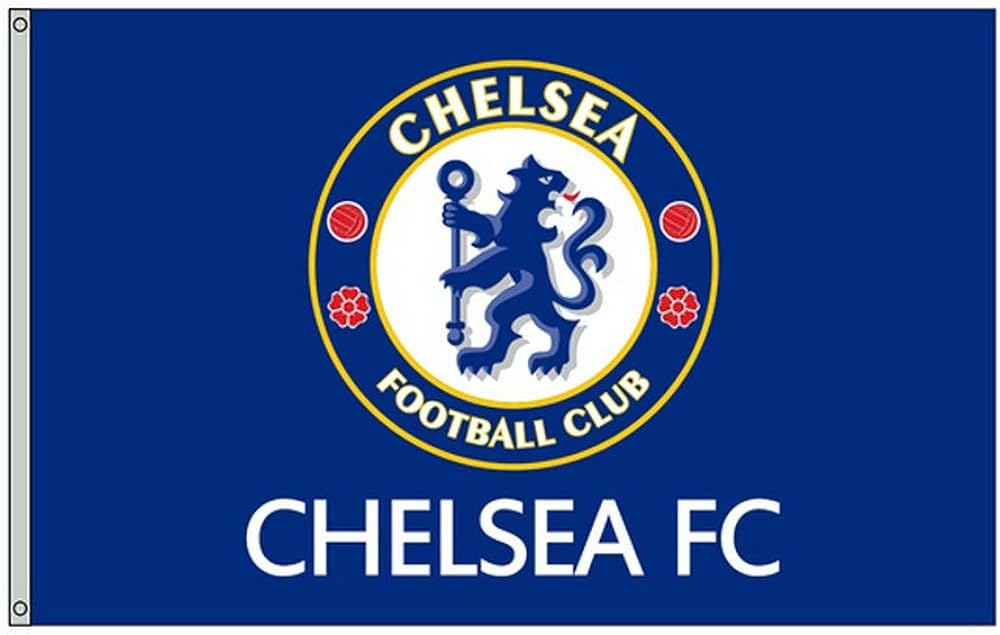

-

Arsenal
The Arsenal Football Club, commonly known as Arsenal, is an English professional football club based in Holloway, North London.
Country: England
League: Premior League
Trophies: 32
-

Manchester united
Manchester united was founded in 1900 and has become Germany's most famous and successful football club. Almost all of Bayern's success has come since the 1960s.
Country: England
League: Premier league
Trophies: 35
-

Chelsea
Chelsea Football Club is an English professional football club based in Fulham, West London. Founded in 1905, the team play their home games at Stamford Bridge. The club competes in the Premier League, the top division of English football.
Country: England
League: Premier League
Trophies: 31